CODING AGENTS AS PIXEL WORLD MODELS
traex/GPT-6.1-Sol · 0178
点击播放 · 原生 RGB 像素
逐轮保存的候选
回放视频、检查图与代码变化。
每份候选均可单独播放。实际图片检查记录在下方工具轨迹中。
候选 01播放与检查图
点击播放 · 原生 RGB 像素
展开代码变化
--- 上一保存版本
+++ 本次保存版本
@@ -0,0 +1,112 @@
+from pathlib import Path
+import numpy as np
+import cv2
+from PIL import Image
+from scipy.ndimage import gaussian_filter
+import artifact_io
+
+ROOT=Path(__file__).resolve().parent
+W,H=256,144
+S=4
+
+def background_from_frame(image):
+ # Local source-only wood reconstruction, matching the slope of the grain.
+ image=image.astype(np.float32)
+ yy,xx=np.mgrid[:H,:W].astype(np.float32)
+ out=image.copy()
+ for cx,cy,rx,ry,dx,dy in [(96,85,29,20,62,-8.5),(144,32,30,16,-52,6)]:
+ mask=(((xx-cx)/rx)**2+((yy-cy)/ry)**2<1).astype(np.float32)
+ mask=gaussian_filter(mask,1.3)
+ source=cv2.remap(image,xx+dx,yy+dy,cv2.INTER_CUBIC,borderMode=cv2.BORDER_REFLECT)
+ ring=(((xx-cx)/(rx+5))**2+((yy-cy)/(ry+5))**2<1)&(((xx-cx)/(rx+1))**2+((yy-cy)/(ry+1))**2>1)
+ mat=np.stack([np.ones(ring.sum()),(xx[ring]-cx)/rx,(yy[ring]-cy)/ry],axis=1)
+ coef=np.linalg.lstsq(mat,image[ring]-source[ring],rcond=None)[0]
+ correction=coef[0]+(xx[...,None]-cx)/rx*coef[1]+(yy[...,None]-cy)/ry*coef[2]
+ source+=correction
+ out=out*(1-mask[...,None])+(source)*mask[...,None]
+ return np.clip(out,0,255)
+
+def rotation(axis,angle):
+ axis=np.asarray(axis,dtype=float); axis/=np.linalg.norm(axis)
+ x,y,z=axis; c=np.cos(angle); s=np.sin(angle)
+ return c*np.eye(3)+(1-c)*np.outer(axis,axis)+s*np.array([[0,-z,y],[z,0,-x],[-y,x,0]])
+
+# The two launch lanes are separated. The balls simply roll straight past,
+# leaving the locked-off view; there is no collision or second launch.
+BALLS=[dict(name='brown',x=143.,y=31.5,r=8.4,v=-183.,slope=.048,color=np.array([46.,28.,20.]),seam=np.array([88.,83.,86.]),phase=.66),
+ dict(name='grey',x=91.,y=84.4,r=11.1,v=193.,slope=.116,color=np.array([96.,105.,121.]),seam=np.array([155.,161.,173.]),phase=.15)]
+
+def sphere_layer(ball, time, X,Y):
+ travel=ball['v']*time
+ cx=ball['x']+travel
+ cy=ball['y']+travel*ball['slope']
+ # Very slight perspective change along a straight tabletop lane.
+ r=ball['r']*(1+travel*0.00015)
+ u=(X-cx)/r; v=-(Y-cy)/r
+ rr=u*u+v*v
+ inside=rr<1
+ z=np.sqrt(np.maximum(1-rr,0))
+ normals=np.stack([u,v,z],axis=-1)
+ light=np.array([-.42,.68,.6]); light/=np.linalg.norm(light)
+ diffuse=np.maximum(np.einsum('...i,i->...',normals,light),0)
+ shade=.64+.38*diffuse
+ # Broad, low-strength soft reflection and dark contact-facing hemisphere.
+ shade-=.065*np.maximum(-v,0)
+ reflected=np.exp(-((u+.35)**2+(v-.38)**2)/.14)*3.5
+ color=ball['color'][None,None,:]*shade[...,None]+reflected[...,None]
+ # A continuous tennis-ball seam on the surface of a rolling sphere.
+ roll=rotation([0,.48,.88],-travel/r)
+ initial=rotation([1,0,0],ball['phase'])@rotation([0,0,1],.28 if ball['name']=='brown' else -.04)
+ texture=np.einsum('...i,ij->...j',normals,roll@initial)
+ latitude=np.arcsin(np.clip(texture[...,1],-1,1))
+ longitude=np.arctan2(texture[...,0],texture[...,2])
+ delta=latitude-.48*np.cos(2*longitude)
+ line=np.exp(-.5*(delta/.055)**2)
+ color=color*(1-line[...,None]*.85)+ball['seam'][None,None,:]*shade[...,None]*line[...,None]*.85
+ # Tiny deterministic felt irregularities, below the source's focus limit.
+ fuzz=np.sin(texture[...,0]*149+texture[...,2]*72)*np.sin(texture[...,1]*125)*1.5
+ color+=fuzz[...,None]
+ alpha=inside.astype(float)
+ premult=color*alpha[...,None]
+ return premult,alpha,cx,cy,r
+
+def draw_at_time(base,ball,t):
+ # Render at supersampled image resolution with a short physical exposure.
+ yy,xx=np.mgrid[:H*S,:W*S].astype(float)
+ X=(xx+.5)/S-.5; Y=(yy+.5)/S-.5
+ n=7
+ a=np.zeros((H*S,W*S),float); p=np.zeros((H*S,W*S,3),float)
+ shadow=np.zeros_like(a)
+ for offset in np.linspace(-.009,.009,n):
+ pr,al,cx,cy,r=sphere_layer(ball,t+offset,X,Y)
+ p+=pr/n; a+=al/n
+ # Soft light from camera-left, shadow displaced right on the wood.
+ shadow+=.30*np.exp(-.5*(((X-(cx+r*.8))/(r*.91))**2+((Y-(cy+r*.29))/(r*.44))**2))/n
+ shadow+=.10*np.exp(-.5*(((X-cx)/(r*.73))**2+((Y-(cy+r*.78))/(r*.17))**2))/n
+ # Match the distinctly defocused appearance of the input.
+ sigma=(1.02 if ball['name']=='grey' else .8)*S
+ a=gaussian_filter(a,sigma)
+ p=gaussian_filter(p,(sigma,sigma,0))
+ canvas=cv2.resize(base,(W*S,H*S),interpolation=cv2.INTER_CUBIC)
+ canvas*=1-shadow[...,None]
+ canvas=canvas*(1-a[...,None])+p
+ return cv2.resize(canvas,(W,H),interpolation=cv2.INTER_AREA)
+
+def main():
+ first=np.asarray(Image.open(ROOT/'first_frame.png').convert('RGB'))
+ background=background_from_frame(first)
+ frames=[first.copy()]
+ for i in range(1,20):
+ t=i/4.
+ image=background.copy()
+ for ball in BALLS:
+ position=ball['x']+ball['v']*t
+ if -30<position<W+30:
+ image=draw_at_time(image,ball,t)
+ frames.append(np.uint8(np.clip(np.rint(image),0,255)))
+ frames=np.stack(frames)
+ artifact_io.save(frames,ROOT)
+ Image.fromarray(np.uint8(background)).save(ROOT/'.tmp/background_final.png')
+
+if __name__=='__main__':
+ main()
候选 02播放与检查图
点击播放 · 原生 RGB 像素

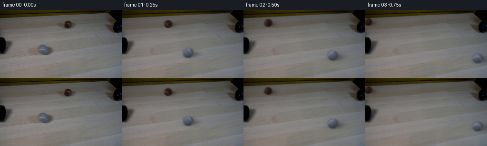
展开代码变化
--- 上一保存版本
+++ 本次保存版本
@@ -14,9 +14,9 @@
image=image.astype(np.float32)
yy,xx=np.mgrid[:H,:W].astype(np.float32)
out=image.copy()
- for cx,cy,rx,ry,dx,dy in [(96,85,29,20,62,-8.5),(144,32,30,16,-52,6)]:
+ for cx,cy,rx,ry,dx,dy in [(96,85,31,22,62,-8.5),(144,32,32,18,-52,6)]:
mask=(((xx-cx)/rx)**2+((yy-cy)/ry)**2<1).astype(np.float32)
- mask=gaussian_filter(mask,1.3)
+ mask=gaussian_filter(mask,3.1)
source=cv2.remap(image,xx+dx,yy+dy,cv2.INTER_CUBIC,borderMode=cv2.BORDER_REFLECT)
ring=(((xx-cx)/(rx+5))**2+((yy-cy)/(ry+5))**2<1)&(((xx-cx)/(rx+1))**2+((yy-cy)/(ry+1))**2>1)
mat=np.stack([np.ones(ring.sum()),(xx[ring]-cx)/rx,(yy[ring]-cy)/ry],axis=1)
@@ -61,7 +61,8 @@
latitude=np.arcsin(np.clip(texture[...,1],-1,1))
longitude=np.arctan2(texture[...,0],texture[...,2])
delta=latitude-.48*np.cos(2*longitude)
- line=np.exp(-.5*(delta/.055)**2)
+ width=.115 if ball['name']=='brown' else .065
+ line=np.exp(-.5*(delta/width)**2)
color=color*(1-line[...,None]*.85)+ball['seam'][None,None,:]*shade[...,None]*line[...,None]*.85
# Tiny deterministic felt irregularities, below the source's focus limit.
fuzz=np.sin(texture[...,0]*149+texture[...,2]*72)*np.sin(texture[...,1]*125)*1.5
可观测工具轨迹
实际执行的命令与返回图片。
命令 1exit 0
/bin/bash -lc "cat prompt.txt && printf '\\n---RULES---\\n' && cat GENERATION_RULES.md && printf '\\n---FILES---\\n' && ls -la"
命令 2exit 0
/bin/bash -lc "cat artifact_io.py && python - <<'PY'
from PIL import Image
im=Image.open('first_frame.png'); im.resize((1024,576)).save('.tmp/enlarged.png')
PY"命令 3exit 0
/bin/bash -lc "python - <<'PY'
import importlib.util
for m in ['numpy','scipy','cv2','PIL']:
print(m, bool(importlib.util.find_spec(m)))
from PIL import Image
im=Image.open('first_frame.png')
im.crop((65,62,126,107)).resize((610,450)).save('.tmp/grey_crop.png')
im.crop((117,17,176,49)).resize((708,384)).save('.tmp/brown_crop.png')
PY"命令 4exit 0
/bin/bash -lc "cat > .tmp/test_clean.py <<'PY'
import numpy as np, cv2
from PIL import Image
im=np.array(Image.open('first_frame.png').convert('RGB'))
mask=np.zeros(im.shape[:2],np.uint8)
cv2.ellipse(mask,(96,85),(24,15),2,0,360,255,-1)
cv2.ellipse(mask,(146,32),(19,11),-5,0,360,255,-1)
# compare inpaint
for r in [3,5,8]:
out=cv2.inpaint(im,mask,r,cv2.INPAINT_TELEA)
Image.fromarray(out).resize((1024,576)).save('.tmp/clean%d.png'%r)
Image.fromarray(mask).save('.tmp/mask.png')
PY
python .tmp/test_clean.py"命令 5exit 0
/bin/bash -lc "cat > .tmp/test_patch.py <<'PY'
import numpy as np,cv2
from PIL import Image
from scipy.ndimage import gaussian_filter
im=np.array(Image.open('first_frame.png').convert('RGB')).astype(np.float32)
y,x=np.mgrid[:144,:256].astype(np.float32)
base=im.copy()
for cx,cy,rx,ry,dx,dy in [(96,85,24,15,62,-8.5),(147,32,22,12,-50,5.5)]:
m=(((x-cx)/rx)**2+((y-cy)/ry)**2 <1).astype(np.float32)
m=gaussian_filter(m,1.3)
src=cv2.remap(im,x+dx,y+dy,cv2.INTER_CUBIC,borderMode=cv2.BORDER_REFLECT)
# fit linear additive correction around narrow exterior ring, excluding other removed ball
ring=(((x-cx)/(rx+5))**2+((y-cy)/(ry+5))**2 <1)&(((x-cx)/(rx+1))**2+((y-cy)/(ry+1))**2 >1)
X=np.stack([np.ones(ring.sum()),(x[ring]-cx)/rx,(y[ring]-cy)/ry],axis=1)
coef=np.linalg.lstsq(X,im[ring]-src[ring],rcond=None)[0]
corr=coef[0]+(x[...,None]-cx)/rx*coef[1]+(y[...,None]-cy)/ry*coef[2]
src+=corr
base=base*(1-m[...,None])+src*m[...,None]
Image.fromarray(np.uint8(np.clip(base,0,255))).save('.tmp/background.png')
Image.fromarray(np.uint8(np.clip(base,0,255))).resize((1024,576)).save('.tmp/background_big.png')
PY
python .tmp/test_patch.py"命令 6exit 0
/bin/bash -lc "cat > .tmp/test_clone.py <<'PY'
import numpy as np,cv2
from PIL import Image
im=np.array(Image.open('first_frame.png').convert('RGB'))
y,x=np.mgrid[:144,:256].astype(np.float32)
base=im.copy()
for cx,cy,rx,ry,dx,dy in [(96,85,26,16,62,-8.5),(144,32,27,13,-52,6)]:
m=np.uint8((((x-cx)/rx)**2+((y-cy)/ry)**2 <1)*255)
src=cv2.remap(im,x+dx,y+dy,cv2.INTER_CUBIC,borderMode=cv2.BORDER_REFLECT)
base=cv2.seamlessClone(src,base,m,(cx,cy),cv2.NORMAL_CLONE)
Image.fromarray(base).save('.tmp/clone.png')
Image.fromarray(base).resize((1024,576)).save('.tmp/clone_big.png')
PY
python .tmp/test_clone.py"命令 7exit 0
/bin/bash -lc "sed -e 's/(96,85,24,15,62,-8.5)/(96,85,29,20,62,-8.5)/' -e 's/(147,32,22,12,-50,5.5)/(144,32,30,16,-52,6)/' .tmp/test_patch.py > .tmp/test_patch2.py python .tmp/test_patch2.py"
命令 8exit 0
/bin/bash -lc "python - <<'PY'
from PIL import Image
im=Image.open('first_frame.png')
for cx,cy in [(91,84),(143,31)]:
print('ball',cx,cy)
for dy in [-8,-5,-2,0,3,6,8]:
print(dy,[im.getpixel((cx+dx,cy+dy)) for dx in [-6,-3,0,3,6]])
PY"命令 9exit 0
/bin/bash -lc "cat > generate.py <<'PY'
from pathlib import Path
import numpy as np
import cv2
from PIL import Image
from scipy.ndimage import gaussian_filter
import artifact_io
ROOT=Path(__file__).resolve().parent
W,H=256,144
S=4
def background_from_frame(image):
# Local source-only wood reconstruction, matching the slope of the grain.
image=image.astype(np.float32)
yy,xx=np.mgrid[:H,:W].astype(np.float32)
out=image.copy()
for cx,cy,rx,ry,dx,dy in [(96,85,29,20,62,-8.5),(144,32,30,16,-52,6)]:
mask=(((xx-cx)/rx)**2+((yy-cy)/ry)**2<1).astype(np.float32)
mask=gaussian_filter(mask,1.3)
source=cv2.remap(image,xx+dx,yy+dy,cv2.INTER_CUBIC,borderMode=cv2.BORDER_REFLECT)
ring=(((xx-cx)/(rx+5))**2+((yy-cy)/(ry+5))**2<1)&(((xx-cx)/(rx+1))**2+((yy-cy)/(ry+1))**2>1)
mat=np.stack([np.ones(ring.sum()),(xx[ring]-cx)/rx,(yy[ring]-cy)/ry],axis=1)
coef=np.linalg.lstsq(mat,image[ring]-source[ring],rcond=None)[0]
correction=coef[0]+(xx[...,None]-cx)/rx*coef[1]+(yy[...,None]-cy)/ry*coef[2]
source+=correction
out=out*(1-mask[...,None])+(source)*mask[...,None]
return np.clip(out,0,255)
def rotation(axis,angle):
axis=np.asarray(axis,dtype=float); axis/=np.linalg.norm(axis)
x,y,z=axis; c=np.cos(angle); s=np.sin(angle)
return c*np.eye(3)+(1-c)*np.outer(axis,axis)+s*np.array([[0,-z,y],[z,0,-x],[-y,x,0]])
# The two launch lanes are separated. The balls simply roll straight past,
# leaving the locked-off view; there is no collision or second launch.
BALLS=[dict(name='brown',x=143.,y=31.5,r=8.4,v=-183.,slope=.048,color=np.array([46.,28.,20.]),seam=np.array([88.,83.,86.]),phase=.66),
dict(name='grey',x=91.,y=84.4,r=11.1,v=193.,slope=.116,color=np.array([96.,105.,121.]),seam=np.array([155.,161.,173.]),phase=.15)]
def sphere_layer(ball, time, X,Y):
travel=ball['v']*time
cx=ball['x']+travel
cy=ball['y']+travel*ball['slope']
# Very slight perspective change along a straight tabletop lane.
r=ball['r']*(1+travel*0.00015)
u=(X-cx)/r; v=-(Y-cy)/r
rr=u*u+v*v
inside=rr<1
z=np.sqrt(np.maximum(1-rr,0))
normals=np.stack([u,v,z],axis=-1)
light=np.array([-.42,.68,.6]); light/=np.linalg.norm(light)
diffuse=np.maximum(np.einsum('...i,i->...',normals,light),0)
shade=.64+.38*diffuse
# Broad, low-strength soft reflection and dark contact-facing hemisphere.
shade-=.065*np.maximum(-v,0)
reflected=np.exp(-((u+.35)**2+(v-.38)**2)/.14)*3.5
color=ball['color'][None,None,:]*shade[...,None]+reflected[...,None]
# A continuous tennis-ball seam on the surface of a rolling sphere.
roll=rotation([0,.48,.88],-travel/r)
initial=rotation([1,0,0],ball['phase'])@rotation([0,0,1],.28 if ball['name']=='brown' else -.04)
texture=np.einsum('...i,ij->...j',normals,roll@initial)
latitude=np.arcsin(np.clip(texture[...,1],-1,1))
longitude=np.arctan2(texture[...,0],texture[...,2])
delta=latitude-.48*np.cos(2*longitude)
line=np.exp(-.5*(delta/.055)**2)
color=color*(1-line[...,None]*.85)+ball['seam'][None,None,:]*shade[...,None]*line[...,None]*.85
# Tiny deterministic felt irregularities, below the source's focus limit.
fuzz=np.sin(texture[...,0]*149+texture[...,2]*72)*np.sin(texture[...,1]*125)*1.5
color+=fuzz[...,None]
alpha=inside.astype(float)
premult=color*alpha[...,None]
return premult,alpha,cx,cy,r
def draw_at_time(base,ball,t):
# Render at supersampled image resolution with a short physical exposure.
yy,xx=np.mgrid[:H*S,:W*S].astype(float)
X=(xx+.5)/S-.5; Y=(yy+.5)/S-.5
n=7
a=np.zeros((H*S,W*S),float); p=np.zeros((H*S,W*S,3),float)
shadow=np.zeros_like(a)
for offset in np.linspace(-.009,.009,n):
pr,al,cx,cy,r=sphere_layer(ball,t+offset,X,Y)
p+=pr/n; a+=al/n
# Soft light from camera-left, shadow displaced right on the wood.
shadow+=.30*np.exp(-.5*(((X-(cx+r*.8))/(r*.91))**2+((Y-(cy+r*.29))/(r*.44))**2))/n
shadow+=.10*np.exp(-.5*(((X-cx)/(r*.73))**2+((Y-(cy+r*.78))/(r*.17))**2))/n
# Match the distinctly defocused appearance of the input.
sigma=(1.02 if ball['name']=='grey' else .8)*S
a=gaussian_filter(a,sigma)
p=gaussian_filter(p,(sigma,sigma,0))
canvas=cv2.resize(base,(W*S,H*S),interpolation=cv2.INTER_CUBIC)
canvas*=1-shadow[...,None]
canvas=canvas*(1-a[...,None])+p
return cv2.resize(canvas,(W,H),interpolation=cv2.INTER_AREA)
def main():
first=np.asarray(Image.open(ROOT/'first_frame.png').convert('RGB'))
background=background_from_frame(first)
frames=[first.copy()]
for i in range(1,20):
t=i/4.
image=background.copy()
for ball in BALLS:
position=ball['x']+ball['v']*t
if -30<position<W+30:
image=draw_at_time(image,ball,t)
frames.append(np.uint8(np.clip(np.rint(image),0,255)))
frames=np.stack(frames)
artifact_io.save(frames,ROOT)
Image.fromarray(np.uint8(background)).save(ROOT/'.tmp/background_final.png')
if __name__=='__main__':
main()
PY
python generate.py"命令 10exit 0
/bin/bash -lc "sed -e 's/(96,85,26,16,62,-8.5)/(96,85,31,22,62,-8.5)/' -e 's/(144,32,27,13,-52,6)/(144,32,32,18,-52,6)/' .tmp/test_clone.py > .tmp/test_clone2.py python .tmp/test_clone2.py"
命令 11exit 0
/bin/bash -lc "python - <<'PY'
from PIL import Image
Image.open('frames/01.png').resize((1024,576)).save('.tmp/frame1_big.png')
PY"命令 12exit 0
/bin/bash -lc "python generate.py && python - <<'PY'
from PIL import Image
import numpy as np
from pathlib import Path
assert np.array_equal(np.array(Image.open('frames/00.png')),np.array(Image.open('first_frame.png')))
a=np.load('pixels.npz')['pixels']; print('Packed RGB video:',a.shape,'; frames:',len(list(Path('frames').glob('*.png'))))
PY"视觉工具实际返回图片 1
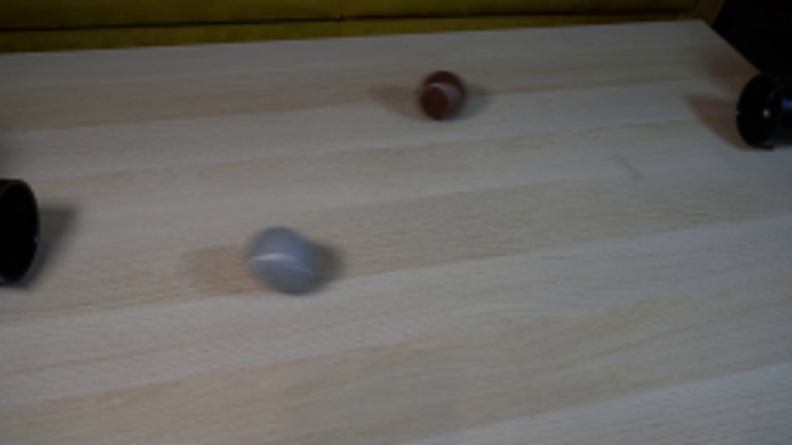
视觉工具实际返回图片 2
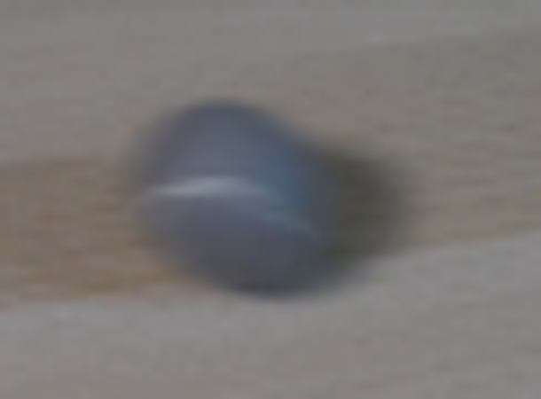
视觉工具实际返回图片 3
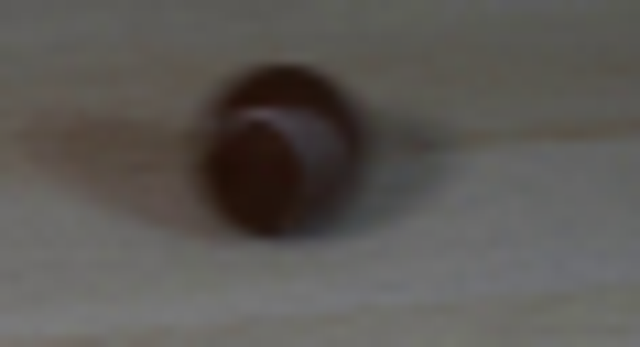
视觉工具实际返回图片 4
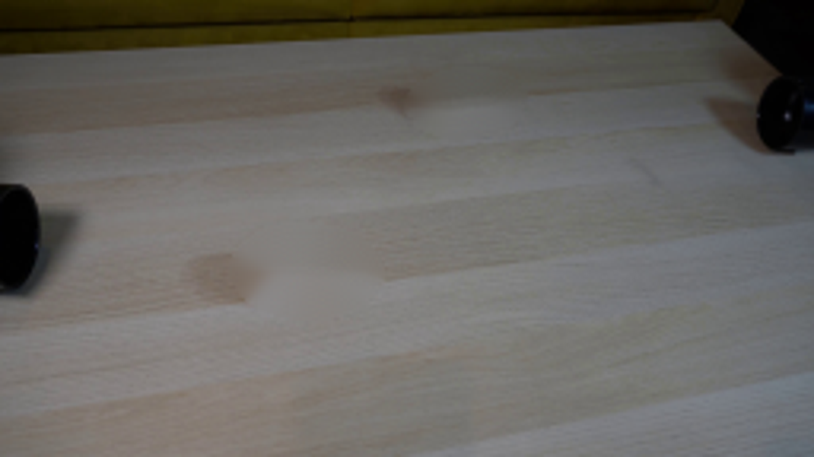
视觉工具实际返回图片 5
视觉工具实际返回图片 6
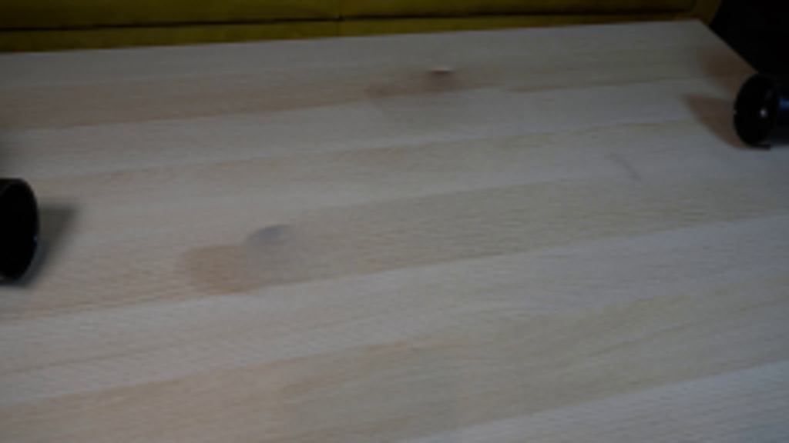
视觉工具实际返回图片 7
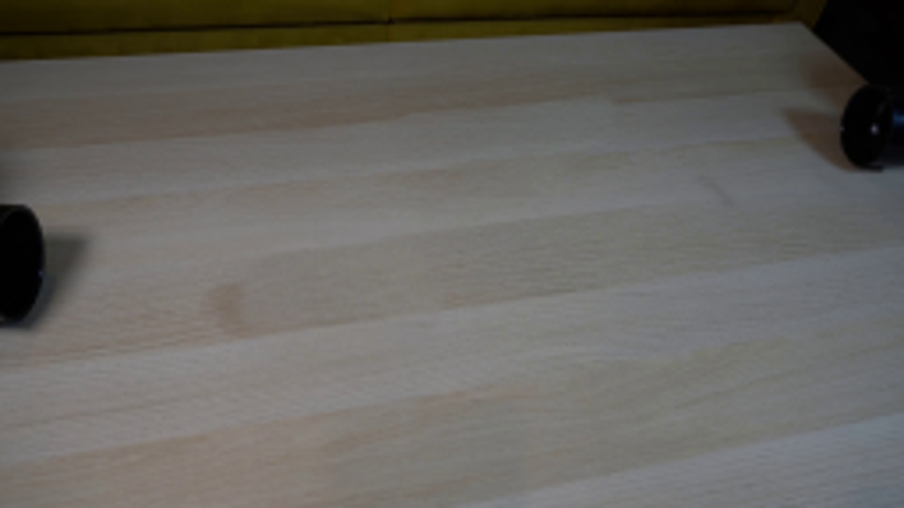
视觉工具实际返回图片 8
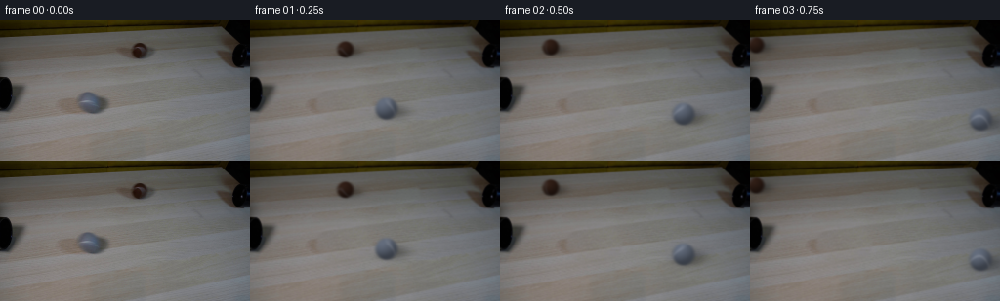
视觉工具实际返回图片 9
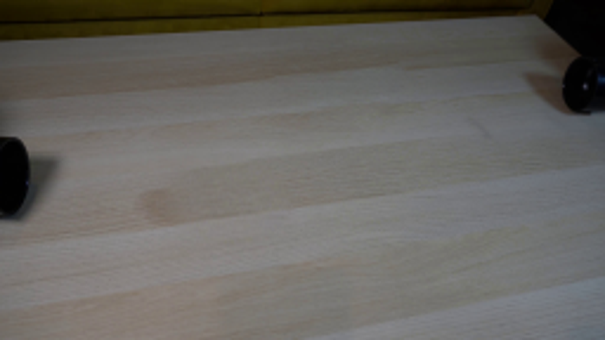
视觉工具实际返回图片 10
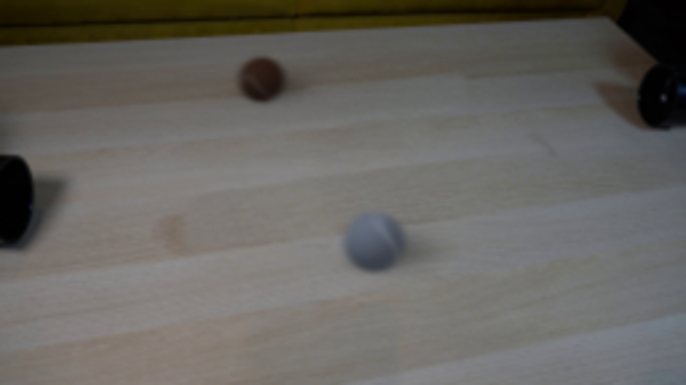
视觉工具实际返回图片 11
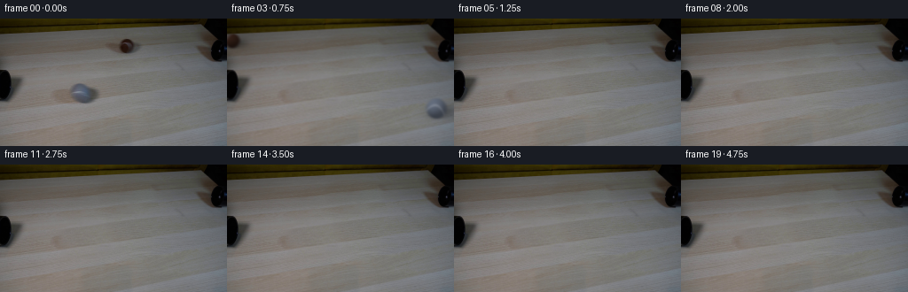
保存候选 2 份；完成命令 12 次；可验证图片返回 11 张。原始 API 响应与完整日志保留在本地。